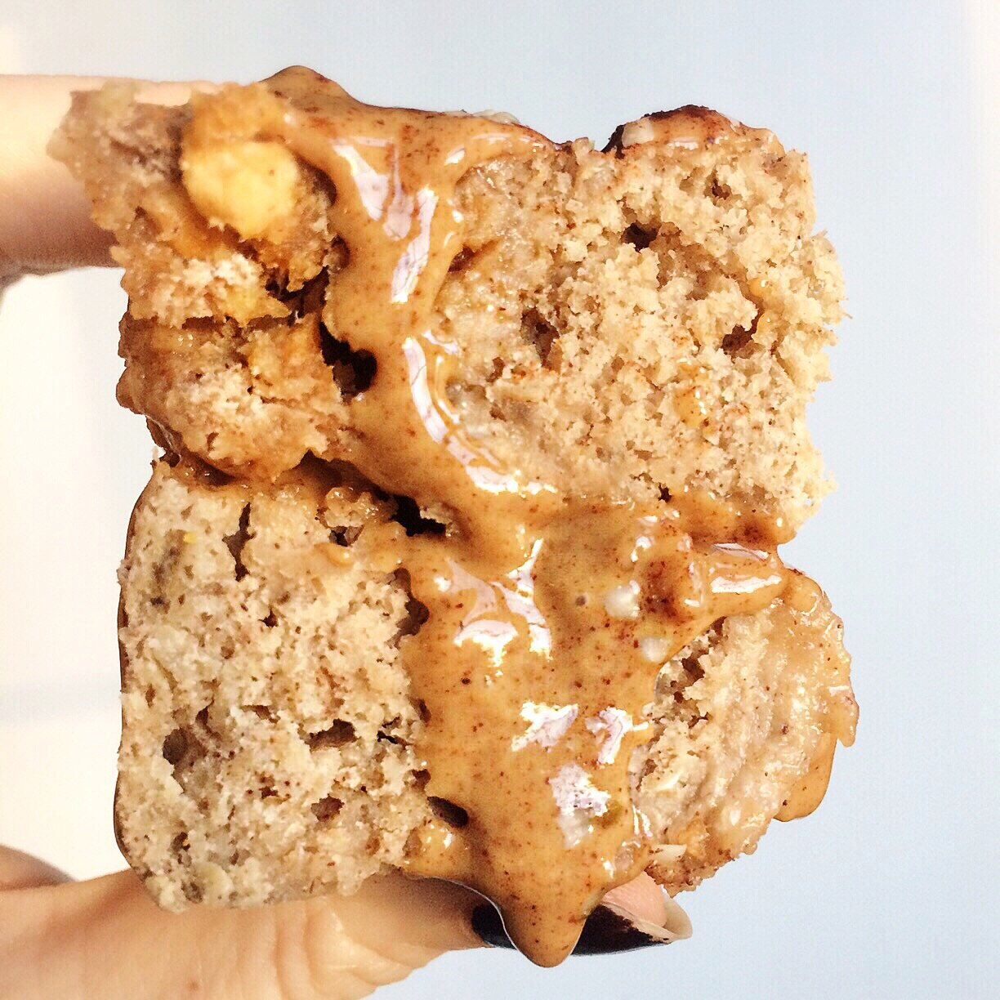
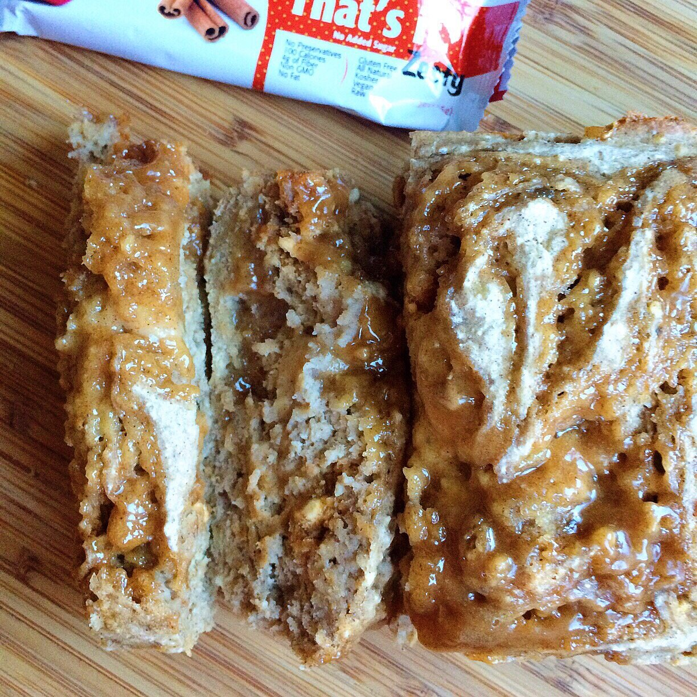

Caramel Swirl Apple Cinnamon Cake (vegan, gluten free)


This aromatic, sweet apple cinnamon cake with a caramel swirl is sure to make your day brighter. This recipe is gluten free and vegan! Unbelievably this healthy option contains no butter, eggs, or dairy, and a fully sugar free version is available.
It's no secret that I love to snack on That's it bars ever since I went vegan. They are usually just 2 ingredients (100% dried fruit: apple + another fruit) and they are the best quick snack at just 100-110 calories each. I love the wholesomeness of them! So you can imagine my excitements when I heard about the new That's it. Zesty. bars! They have three different flavors, but I first tried the apple + cinnamon one since it's such a classic flavor. Again, just two ingredients for a wholesome, quick snack.
Sometimes, it's fun to add chopped up bars into recipes for bursts of flavor within it. Vegan chocolate bars are an obvious choice, but have you ever added fruit bars to your baking?! It's pretty life changing. I added it to this apple cinnamon cake recipe and it was a greattt decision. While not technically essential for the recipe, it's mandatory in my book. Because yum.
This recipe is made in a bread loaf pan, but it's more of a cake than anything else. It's moist, yet slightly dense, and sweet in every way imaginable. Not to mention, the cinnamon spice makes the whole house deliciously aromatic. The 2-ingredient caramel swirl is one of the best aspects of this recipe. If you are avoiding sugar entirely, you can use IMO fiber syrup instead of brown rice syrup for a fully sugar free option.
This caramel swirl apple cinnamon cake is vegan, gluten free, and it contains no butter, oil, or eggs. Try it out and let me know if you ate the entire thing in less than two days like I did, or...
Caramel Swirl Apple Cinnamon Cake
Makes: 8 slices
Batter
-
1.5 cups rolled oats, ground into flour
-
½ cup buckwheat flour
-
1 cup unsweetened applesauce (or 2 medium bananas, mashed)
-
½ TBSP cinnamon
-
½ TBSP baking powder
-
¼ cup baking stevia (Optional)
-
3/4 cup unsweetened almond milk
-
1 cinnamon + apple That’s it. Zesty. bar
Caramel Swirl
-
1 TBSP almond butter
-
2 TBSP brown rice syrup
-
Grind the oats into a flour. Then, in a medium bowl, mix the remaining loaf ingredients together except for the That’s it. Zesty. bar. Cut the bar into 16 small pieces, then incorporate it into the batter.
-
Make the caramel swirl by mixing the two ingredients. Spray a bread loaf pan with nonstick spray. Pour half of the batter in. Then pour on half of the caramel, swirling it gently with a knife.
-
Top with the remaining loaf batter, then the remaining caramel. Swirl the caramel once more.
-
Bake at 350 F for 40-45 minutes. Let cool 10 minutes, slice into 8 pieces, and enjoy!